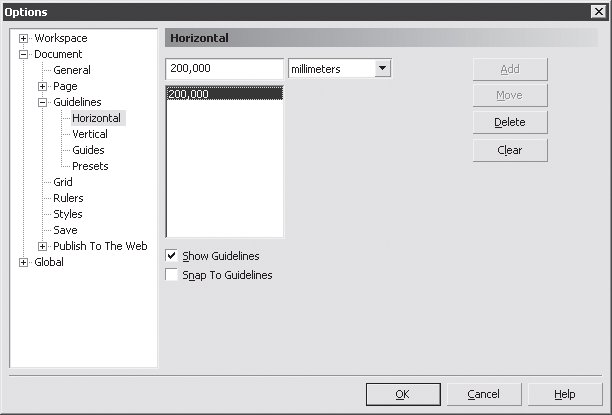
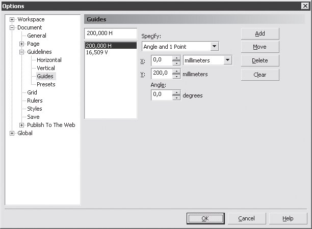
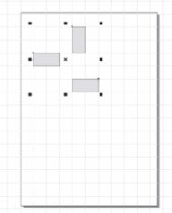
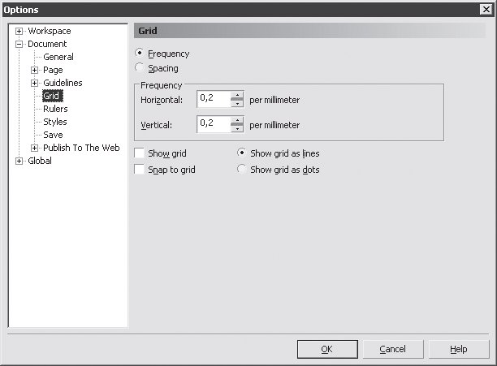
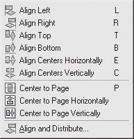
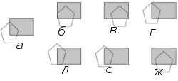
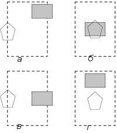
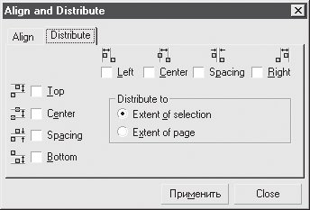
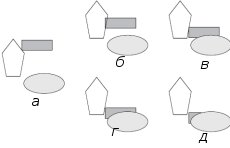
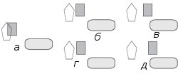

Лекция 7: Расположение объектов в документе
Выравнивание объектов
Под выравниванием понимают смещение по горизонтали или вертикали, при котором одна или обе координаты объекта "привязываются" к соответствующим координатам соседних фигур, листа документа или вспомогательных линий.
Выравнивание вручную
Самый простой, но и самый неточный способ выровнять объекты — вручную переместить их с помощью мыши. Для облегчения этой задачи можно использовать вспомогательные элементы: направляющие (Guides) и сетку (Grid).
Направляющие (Guides)
Направляющие — это цветные штриховые линии, которые не выводятся на печать. Для их создания можно щелкнуть на одной из линеек и, не отпуская кнопку мыши,вытащить направляющую на лист документа. Если вы хотите задать точное расположение линий, при помощи команды Tools \Rightarrow Options (Сервис \Rightarrow Параметры) вызовите окно Options (Параметры) и выберите в нем один из подпунктов Guidelines (Направляющие) пункта Document (Документ) (рис. 7.1).
Рис. 7.1. Окно Options (Параметры), страница Document/Guidelines/Horizontal (Документ/Направляющие/Горизонтальные)
СОВЕТ.Если в документе есть хотя бы одна направляющая, описанное окно можно вызвать двойным щелчком на ней.
В верхнем поле следует ввести координату направляющей: для Horizontal (Горизонтальная) — расположение по вертикали, для Vertical (Вертикальная) — по горизонтали. Затем нужно нажать кнопку Add (Добавить). Кнопка Move (Переместить) служит для изменения позиции направляющей, Delete (Удалить) — для ее удаления.
В CorelDRAW можно выставлять направляющие не только по вертикали и горизонтали, но и под произвольным углом. Для этого выберите в окне Options (Параметры) страницу Document/Guidelines/Guides (Документ/Направляющие/Наклонные) (рис. 7.2).
Рис. 7.2. Окно Options (Параметры), страница Document/Guidelines/Guides (Документ/Направляющие/Наклонные)
При помощи страницы Presets (Заготовки) можно создавать целые группы направляющих, например, для учета незапечатываемых полей принтера или для многоколоночной верстки.
После создания направляющей ее можно использовать как ориентир для выравнивания объектов. Для облегчения этой процедуры включите режим привязки при помощи команды View \Rightarrow Snap To Guidelines (Вид \Rightarrow Привязка к направляющим).
В результате объект при перемещении по окну документа будет "прилипать" к направляющим.
Сетка (Grid)
Сетка представляет собой набор пересекающихся штриховых или пунктирных линий (рис. 7.3).
Рис. 7.3. Лист документа с включенной сеткой
Сетку удобно использовать, если нужно располагать объекты на строго определенном расстоянии, а размеры их должны быть кратны некоторой величине. Например, рисование поля для игры в "морской бой", планирование размещения мебели в офисе, проектирование узора облицовочной плитки и т. п. Параметры сетки можно установить в диалоговом окне Options (Параметры), выбрав страницу Document/Grid (Документ/Сетка) (рис. 7.4).
Основными в этом окне являются параметры Horizontal (По горизонтали) и Vertical (По вертикали) области Frequency (Частота), которые определяют частоту линий сетки, соответственно, по горизонтали и по вертикали. При включенной опции Snap to grid (Привязка к сетке) объект при перемещении вручную будет "прилипать" к ближайшей линии сетки.
СОВЕТ.Режим привязки к сетке можно также включить командой главного меню View \Rightarrow Snap To Grid (Вид \Rightarrow Привязка к сетке).
Рис. 7.4. Настройка параметров сетки
Команды подменю Align and Distribute (Выровнять и распределить)
Это подменю (рис. 7.5) расположено в пункте главного меню Arrange (Расположение).
Рис. 7.5. Подменю Arrange (Расположение)
Все команды данного подменю, кроме Align and Distribute (Выровнять и распределить), позволяют выровнять выделенные объекты по координате их центров или краев:
Align Left (Выровнять по левому краю) — левые края объектов выстраиваются по одной вертикали (рис. 7.6, б);
Align Right (Выровнять по правому краю) — правые края объектов выстраиваются по одной вертикали (рис. 7.6, в);
Align Top (Выровнять по верхнему краю) — объекты выравниваются по верхнему краю (рис. 7.6, г);
Align Bottom (Выровнять по нижнему краю) — объекты выравниваются по нижнему краю (рис. 7.6, д);
Align Centers Horizontally (Выровнять центры по горизонтали) — объекты выравниваются так, что их центры лежат на одной горизонтали (рис. 7.6, е);
Align Centers Vertically (Выровнять центры по вертикали) — объекты выравниваются так, что их центры лежат на одной вертикали (рис. 7.6,ж);
Рис. 7.6. Способы выравнивания объектов относительно друг друга: а — первоначальное расположение объектов; б — выравнивание по левому краю; в — по правому краю; г — по верху; д — по низу; е — центры по горизонтали; ж — центры по вертикали
Center to Page (Центрировать на странице) — объекты смещаются так, что их центры совпадают с центром страницы (рис. 7.7, б);
ВНИМАНИЕ.Семь перечисленных выше команд имеют в качестве клавиатурного эквивалента всего одну клавишу, а не сочетание. Это очень удобно, но при случайном нажатии может привести к незапланированным перемещениям объектов.
Center to Page Horizontally (Центрировать на странице по горизонтали) — объекты смещаются так, что их центры лежат на горизонтали, проходящей через центр страницы (рис. 7.7, в);
Center to Page Vertically (Центрировать на странице по вертикали) — объекты смещаются так, что их центры лежат на вертикали, проходящей через центр страницы (рис. 7.7, г).
Рис. 7.7. Способы выравнивания объектов на странице (граница страницы показана штриховой линией): а — первоначальное положение объектов; б — выравнивание по центру страницы; в — выравнивание по горизонтали, проходящей через центр страницы; г — выравнивание по вертикали, проходящей через центр страницы
ВНИМАНИЕ.Выравнивание всегда производится относительно одного из выделенных объектов, который остается неподвижным. Если вы выделяли фигуры по одной, используя клавишу Shift, то не смещается последний выделенный объект. Если выделение происходило одновременно (например, при помощи команды подменю Edit \Rightarrow Select All (Правка \Rightarrow Выделить все)), то неподвижным остается объект на заднем плане (о раcположении объектов по планам см. разд. 7.2). Команды Center to Page (Центрировать на странице), Center to Page Horizontally (Центрировать на странице по горизонтали) и Center to Page Vertically (Центрировать на странице по вертикали) можно выполнить, даже если выделен всего один объект.
Если выбрать команду Align and Distribute (Выровнять и распределить) в одноименном подменю, то откроется диалоговое окно со всеми функциями выравнивания, о которых говорилось выше. Кроме того, на вкладке Distribute (Распределить) (рис. 7.8) находятся команды, позволяющие равномерно разместить объекты на странице документа. Команды распределения похожи на операции выравнивания, но при распределении назначенные координаты объектов не становятся одинаковыми, а изменяются равномерно от меньшей к большей.
Рис. 7.8. Вкладка Distribute (Распределить) диалогового окна Align and Distribute (Выровнять и распределить)
В левой части окна приведены команды распределения по вертикали:
Top (Верх) — объекты размещаются таким образом, что их верхние края находятся на одинаковом расстоянии друг от друга (рис. 7.9, б);
Center (Центр) — на одинаковом расстоянии будут располагаться центры объектов (рис. 7.9, в);
Spacing (Дистанция) — расстояние между ближайшими краями соседних объектов становится одинаковым (рис. 7.9, г);
Bottom (Низ) — объекты размещаются таким образом, что их нижние края находятся на одинаковом расстоянии друг от друга (рис. 7.9, д).
Рис. 7.9. Способы распределения объектов по вертикали: а —первоначальное расположение объектов; б — распределение по верхнему краю; в — по центру объектов; г — по дистанции; д — по нижнему краю
Аналогично действуют и команды распределения объектов по вертикали:
Left (Влево) — объекты размещаются таким образом, что их левые края находятся на одинаковом расстоянии друг от друга (рис. 7.10, б);
Center (Центр) — на одинаковом расстоянии будут располагаться центры объектов (рис. 7.10, в);
Spacing (Дистанция) — расстояние между ближайшими краями соседних объектов становится одинаковым (рис. 7.10, г);
Right (Вправо) — объекты размещаются таким образом, что их правые края находятся на одинаковом расстоянии друг от друга (рис. 7.10, д).
Рис. 7.10. Способы распределения объектов по вертикали: а — первоначальное расположение объектов; б — распределение по левому краю; в — по центру объектов; г — по дистанции; д — по правому краю
Распределение объектов, как и выравнивание, может происходить также друг относительно друга, и относительно листа документа. В первом случае два крайних объекта не смещаются, перестраиваются только промежуточные. Если распределение производится по листу документа, крайние фигуры сдвигаются по краям листа, а промежуточные располагаются между ними.